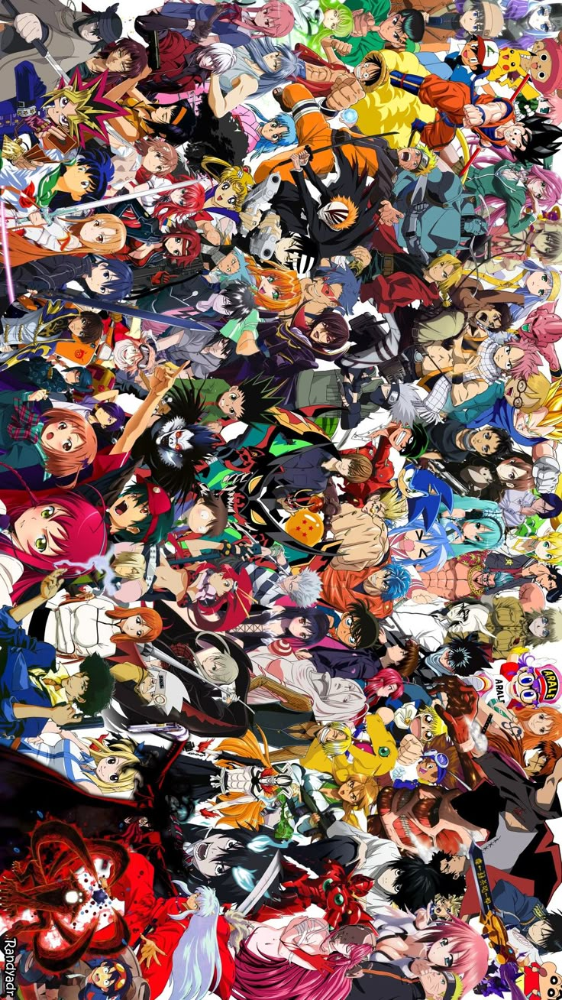
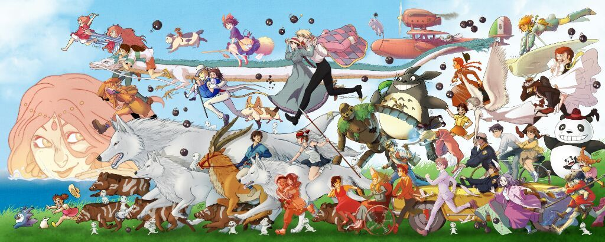

რა არის ანიმე? ანიმე (Anime, アニメ) იაპონური ანიმაციის სტილია, რომელიც გამოირჩევა უნიკალური მხატვრული ელემენტებით, დრამატული სიუჟეტებით და კულტურულად სპეციფიკური თემატიკით. ტერმინი "ანიმე" იაპონიაში ნებისმიერი ანიმაციის აღსანიშნავად გამოიყენება, თუმცა საერთაშორისო დონეზე, ის განასხვავებს იაპონურ ანიმაციას დასავლეთის სხვა ტიპის მულტფილმებისგან.
ანიმეს ისტორია ანიმეს ფესვები მე-20 საუკუნის დასაწყისში, 1910-იან წლებში იწყება, როცა იაპონელმა ანიმატორებმა დასავლური ანიმაციისგან შთაგონება მიიღეს. თუმცა, თანამედროვე ანიმეს განვითარებაში მნიშვნელოვანი წვლილი შეიტანა ოსამუ ტეზუკამ (Osamu Tezuka), რომელიც ხშირად მოიხსენიება როგორც "ანიმეს ღმერთი" და "იაპონური მულტფილმის ვალტ დისნეი". 1950-60-იან წლებში ტეზუკამ შექმნა პირველი ცნობილი სერიალები, როგორიცაა Astro Boy (鉄腕アトム, Tetsuwan Atom), რომელიც ითვლება თანამედროვე ანიმეს დასაბამად. 1970-80-იან წლებში ანიმემ მოიპოვა უფრო დიდი პოპულარობა, გაჩნდა ისეთი საკულტო ნამუშევრები, როგორიცაა:
1990-2000-იანი წლებიდან ანიმემ მსოფლიო პოპულარობა მოიპოვა, განსაკუთრებით სტუდია Ghibli-ის, Madhouse-ის, Kyoto Animation-ისა და სხვა სტუდიების წყალობით.
ანიმეს გლობალური გავლენა გასაოცარი მასშტაბებისაა. ამჟამად ანიმე ახდენს ზეგავლენას არა მხოლოდ იაპონიაზე, არამედ მთელ მსოფლიოში. დასავლეთში უკვე არსებობს ისეთი ფართო ფანბაზები, რომ ანიმე კონვენციები და ფესტივალები, როგორიცაა Anime Expo ლოს-ანჯელესში ან Comiket ტოკიოში, წელს-წლეულს მილიონობით ვიზიტორს მასპინძლობს.
ანიმე ბევრად მეტია, ვიდრე უბრალოდ მხატვრული ფორმა; ის წარმოადგენს იაპონური კულტურის უკვდავებას და ღირებულებებს, როგორიცაა პატრიოტიზმი, ოჯახური კავშირები, მეგობრობა, გმირობის იდეალები, თვითგანვითარება, სიყვარულის და სამართლიანობის იდეა.